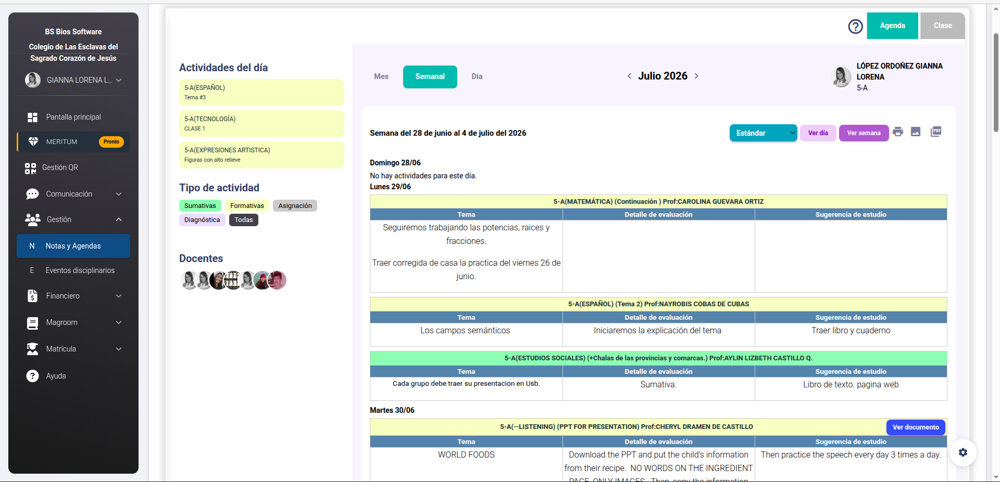
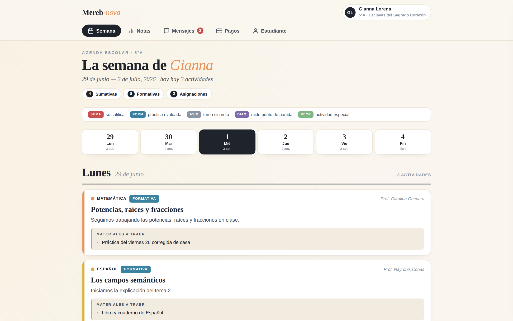
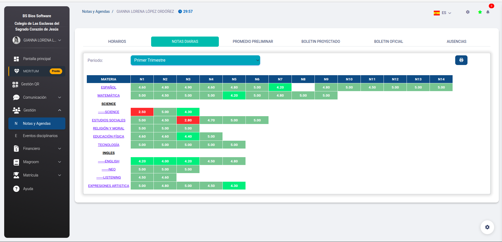
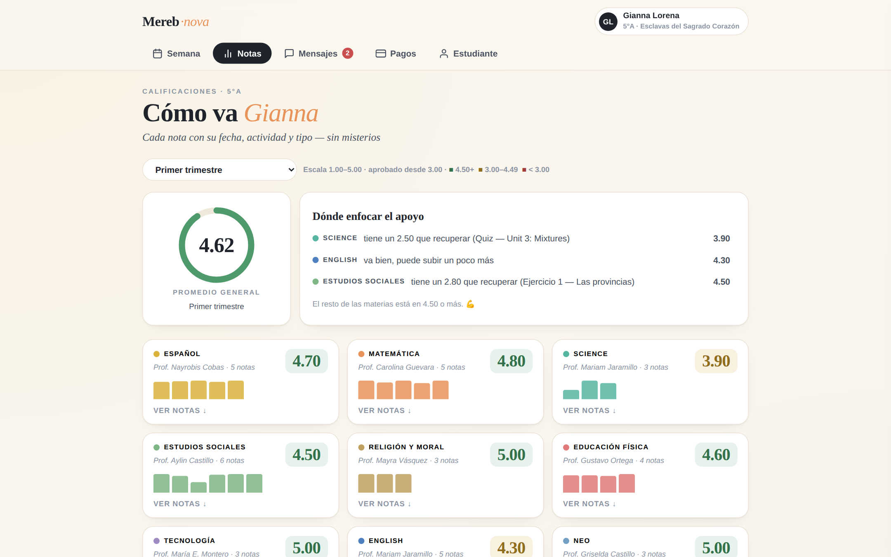
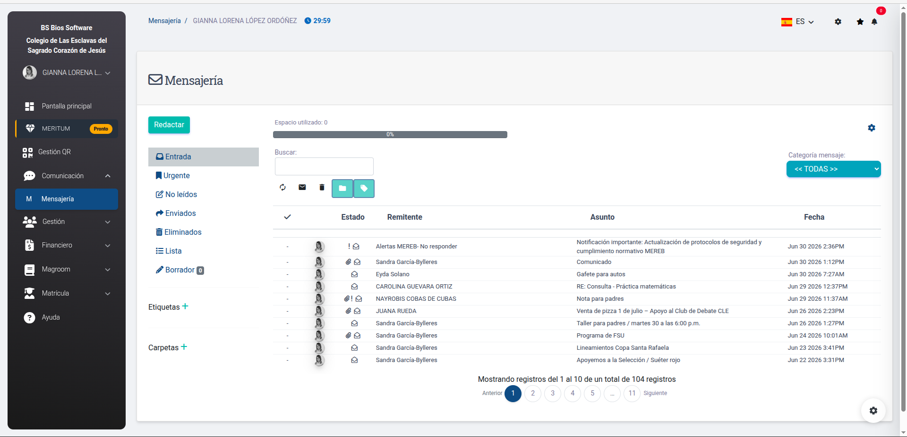
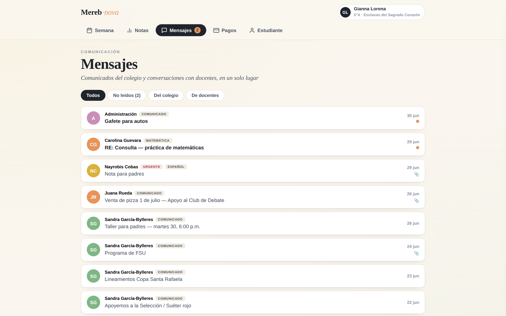
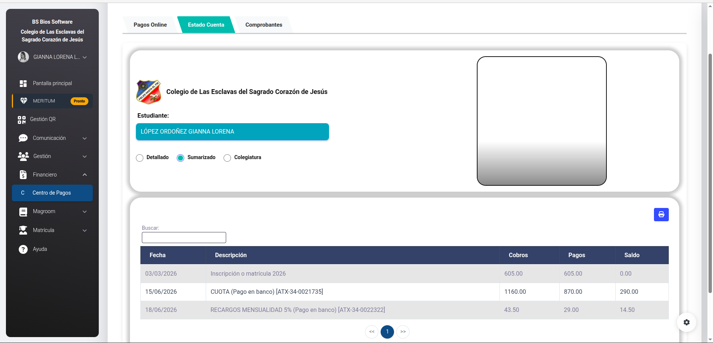
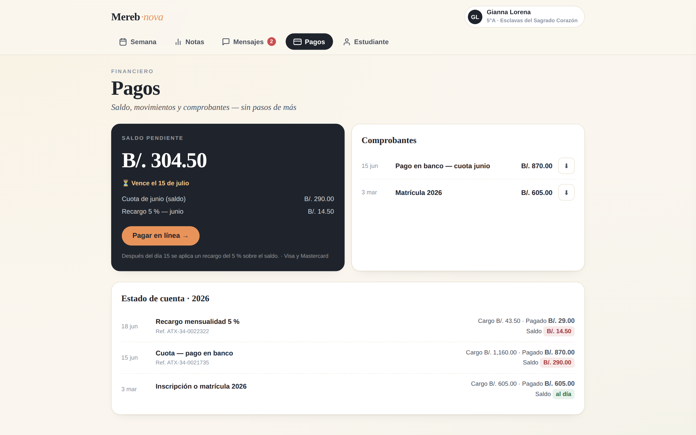
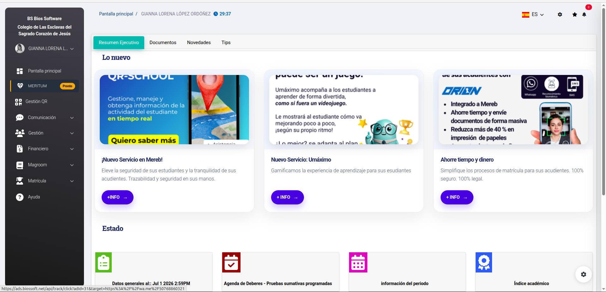
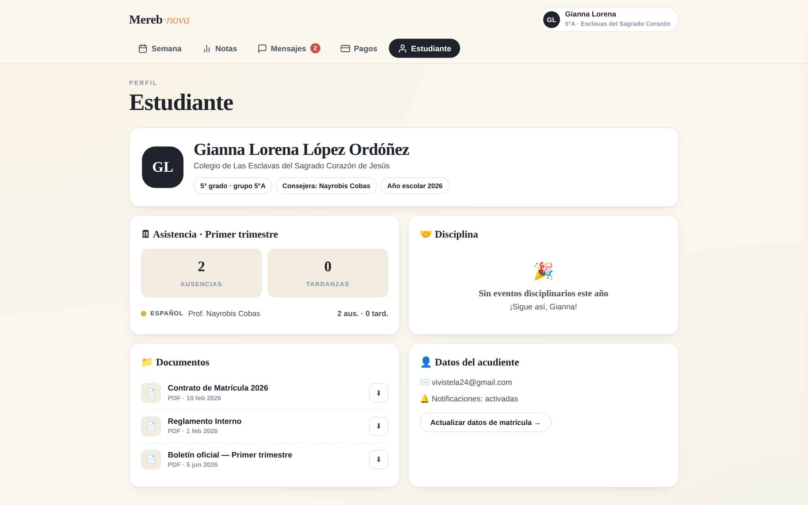

La misma información del colegio — presentada para entenderse en segundos
Lo primero al entrar hoy son banners de venta dirigidos a directores. Los datos del estudiante quedan abajo del pliegue. En Nova, la semana del estudiante es la pantalla principal.
Ver la agenda de la semana toma hoy 5 pasos entre menús con jerga interna. En Nova son 5 secciones claras: Semana, Notas, Mensajes, Pagos, Estudiante.
Notas sin fecha ni nombre (N1…N14), tablas en mayúsculas, colores sin leyenda. En Nova cada dato tiene contexto: qué actividad fue, cuándo, de qué tipo y cómo leerla.
Materias con código de color consistente, tipo de actividad siempre explicado, materiales y sugerencias de estudio destacados. El día de hoy resaltado, y todo imprimible para la nevera.

Encabezados tipo 5-A(--LISTENING) Prof:…, colores sin leyenda, tres controles distintos para cambiar de vista.

Cada actividad es una tarjeta con su materia, tipo, docente, materiales y sugerencia de estudio. Hoy siempre a un toque.
Hoy es imposible saber qué fue el 2.50 de la columna “N1”. En Nova cada calificación dice qué actividad fue, cuándo y de qué tipo — y el sistema señala solo dónde enfocar el apoyo.

Columnas N1…N14 sin fechas ni nombres de actividad. Rojo y verde sin explicación del umbral.

Promedio general con la escala explicada, tarjeta “Dónde enfocar el apoyo” y detalle expandible por materia.
Los comunicados del colegio no necesitan CC, BCC, carpetas ni cuota de espacio. Necesitan leerse: quién escribe, si es urgente, de qué materia, y si trae adjunto.

Bandeja tipo correo con 11 páginas, campos CC/BCC para leer un mensaje y barra de “espacio utilizado”.

Filtros simples, etiquetas de urgencia y materia, no leídos visibles y respuesta directa en el panel.
Hoy hay que seleccionar al único estudiante de la cuenta en cada pestaña para ver un dato. En Nova el saldo, su desglose, el vencimiento y el botón de pago están en la primera pantalla.

Tres pestañas, selector de estudiante repetido, publicidad dentro del flujo de pago y elementos rotos.

Saldo con desglose y fecha de vencimiento, aviso del recargo, comprobantes y estado de cuenta juntos.
Hoy el acceso recibe al acudiente con tres banners de venta pensados para directores de colegio. En Nova, cada pantalla existe para responder una pregunta de la familia.

“Lo nuevo”: QR-School, Umáximo, Orion — productos para directores, mostrados a los padres antes que los datos de su hijo.

Perfil claro del estudiante: asistencia, disciplina, documentos y datos del acudiente — cero publicidad.
Documentados con capturas en la auditoría (julio 2026)